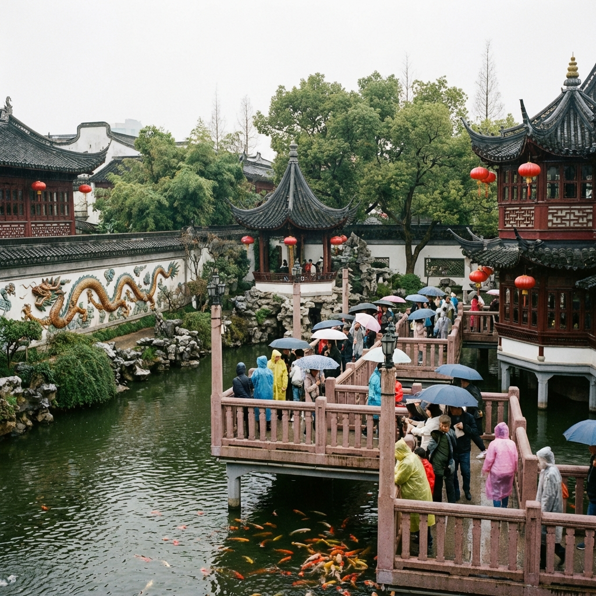
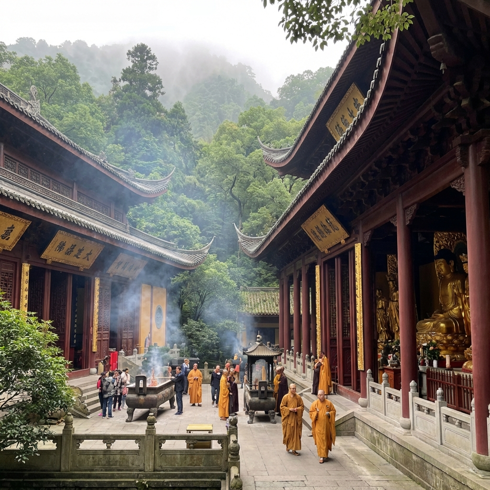
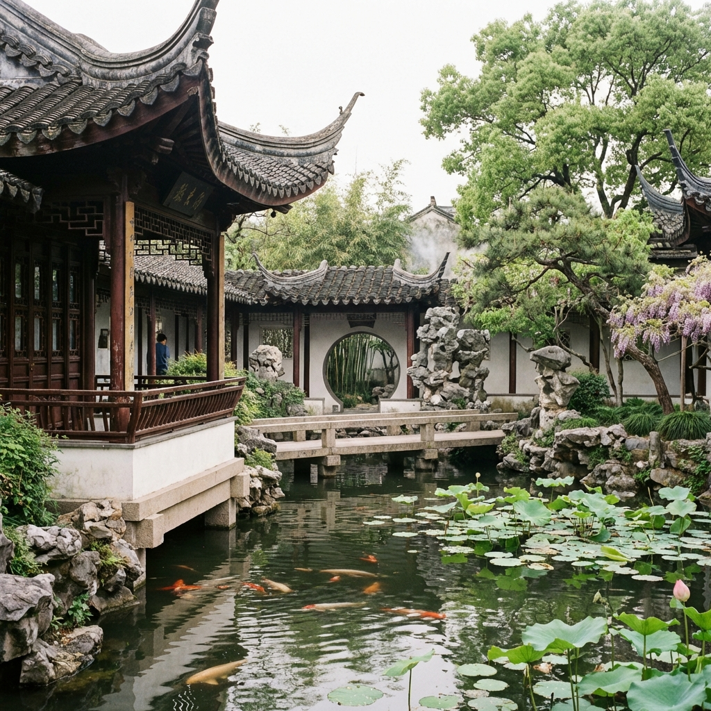
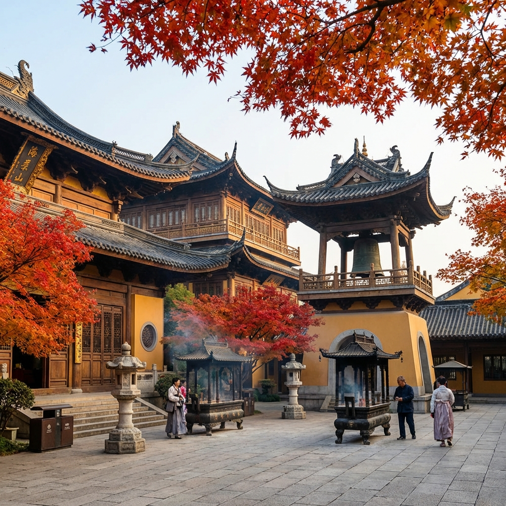
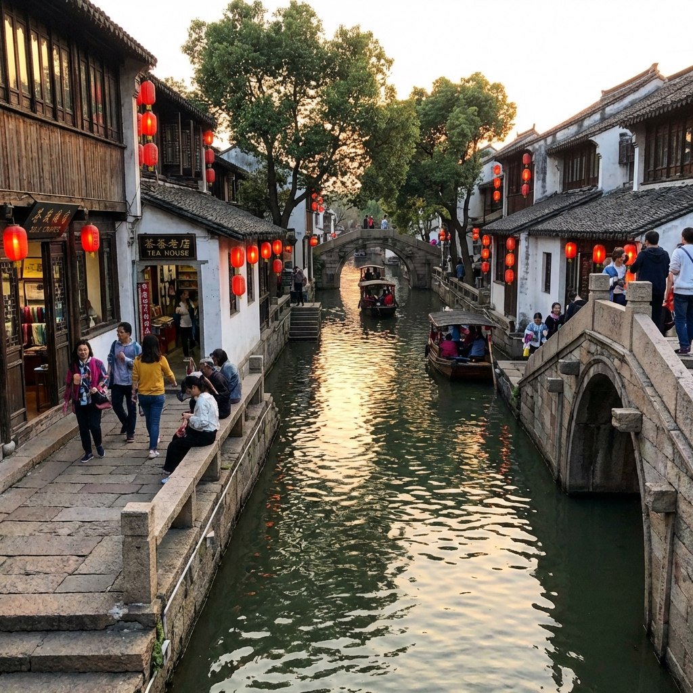

🏮 A Journey Through Water Towns 🏮
上海 · 烏鎮 · 杭州 · 蘇州
長榮航空 EVA Air · 訂位代號：KQYKHG
穿越千年水鄉，品味江南古韻。從繁華魔都到寧靜古鎮，從西湖煙雨到蘇州園林。
🏨 住宿：上海外灘南京東路城際酒店（2晚）
辦理入境手續，搭乘地鐵前往酒店
中國第一商業街，體驗上海繁華購物氛圍
明代古典園林，品嚐南翔小籠包
欣賞浦東天際線，萬國建築博覽群
搭乘遊船欣賞外灘與陸家嘴夜景
法租界最美梧桐道，老洋房建築群
網紅咖啡店聚集地，文青打卡聖地
石庫門建築改造的時尚休閒區
創意小店、藝術工作室和特色酒吧
🏨 住宿：烏鎮水巷驛（1晚）
烏鎮是典型的江南水鄉古鎮，擁有1300多年歷史。白牆黛瓦、小橋流水，是中國最具代表性的古鎮之一。
長途巴士或高鐵至桐鄉轉車（約2-2.5小時）
遊覽古街、染坊、酒坊、木雕館，體驗江南水鄉風情
薑母茶、定勝糕、白水魚
乘坐搖櫓船，欣賞燈火闌珊的古鎮夜色
🏨 住宿：杭州西湖五霖PAGODA君亭設計酒店（2晚）
「欲把西湖比西子，淡妝濃抹總相宜」。杭州西湖是中國十大風景名勝之一，2011年列入世界遺產。
巴士或高鐵（約1.5小時）
白蛇傳故事發生地，西湖十景之「斷橋殘雪」
西湖最著名的島嶼，人民幣一元紙幣的背面圖案
西湖十景之一，賞花觀魚的絕佳去處
登塔俯瞰西湖全景，欣賞「雷峰夕照」
東坡肉、西湖醋魚、龍井蝦仁
江南著名古剎，祈福求平安
欣賞歷代佛教石刻藝術
城市濕地公園，乘船穿梭蘆葦蕩
文藝咖啡館聚集地，老杭州風情
欣賞京杭大運河夜景
手工藝品、特色小吃、杭州夜生活
🏨 住宿：拙見・思績堂酒店（2晚）
「江南園林甲天下，蘇州園林甲江南」。蘇州古典園林被列入世界文化遺產，是中國園林藝術的巔峰之作。
高鐵（約1.5小時）
中國四大名園之首，蘇州園林代表作
貝聿銘大師設計，需預約（週一休館）
以太湖石假山著稱的園林奇觀
蘇州最具水鄉特色的歷史老街
誠品書店・東方之門，蘇州新地標
千年古街夜遊，品蘇式小吃
蘇州著名律宗道場，清幽禪意
「姑蘇城外寒山寺，夜半鐘聲到客船」
唐詩《楓橋夜泊》的歷史場景
中國四大名園之一，建築藝術精品
「吳中第一名勝」，虎丘斜塔
「水陸並行、河街相隣」的蘇州風情
高鐵至上海虹橋（約30分鐘）
最後採購伴手禮、購物退稅
結束美好的江南水鄉之旅
精選各城市特色飯店
2晚 (2/2-2/4)
南京東路步行街
1晚 (2/4-2/5)
烏鎮景區內
2晚 (2/5-2/7)
西湖風景區
2晚 (2/7-2/9)
蘇州古城區
城市間交通方式與建議時間
| 區段 | 建議方式 | 參考時間 |
|---|---|---|
| 浦東機場 → 外灘 | 🚇 地鐵 2號線 | 約 1.5 小時 |
| 上海 → 烏鎮 | 🚌 巴士 或高鐵至桐鄉 | 約 2-2.5 小時 |
| 烏鎮 → 杭州 | 🚄 高鐵 或巴士 | 約 1.5 小時 |
| 杭州 → 蘇州 | 🚄 高鐵 | 約 1.5 小時 |
| 蘇州 → 浦東機場 | 🚄 高鐵 至虹橋 + 地鐵 | 約 2-2.5 小時 |
告訴你每天怎麼從 A 點到 B 點，超清楚！
09:50 起飛
12:05 抵達
入住，休息
傍晚 17:00-21:00
💡 提醒：抵達機場後，跟著「地鐵」指標走。入閘前記得開支付寶，用「出行」功能掃碼進站。
上午 09:00
09:30-12:00
下午 14:00-17:00
晚上
上午 08:00
搭乘 09:00 班次
約 11:00 抵達
下午遊覽西柵，晚上看夜景
⚠️ 重要：巴士票請用「巴士管家」或「攜程」App 提前 1-2 天預訂！熱門時段可能售罄。
上午 10:00
轉地鐵 1 號線
入住，下午遊西湖
上午 08:00
上午 09:00-12:00
下午，可搭遊船
上午 09:00
搭高鐵
約 12:00 抵達
入住，下午遊拙政園
💡 提醒：高鐵票用「12306」App 提前 1-3 天購買。班次很多，約 15-30 分鐘一班。
上午 09:00
上午 10:00-12:00
下午，逛小店、喝茶、吃小吃
晚上看燈籠倒影
下午 14:00
搭 15:30 左右的高鐵
約 16:00 抵達
18:10 前到（航班 20:10）
22:10 抵達
⚠️ 重要：蘇州到浦東機場全程約 2 小時，請務必預留充足時間！建議 15:00 前離開蘇州。
每個景點的門票、營業時間、交通方式、遊玩貼士
上海最著名的地標，全長1.5公里的濱江步道。一側是「萬國建築博覽群」——52座風格各異的歐式歷史建築；對岸是陸家嘴的現代摩天大樓群，包括東方明珠塔、上海中心大廈。

建於明代嘉靖年間的江南古典園林，已有400多年歷史。園內有亭台樓閣、假山池塘，是上海現存最完整的古典園林。周邊的城隍廟商圈是品嚐上海小吃的絕佳地點。
烏鎮西柵是中國最美的水鄉古鎮之一，擁有 1300 多年歷史。白牆黛瓦、小橋流水、枕水人家，完整保留了江南水鄉的傳統風貌。西柵比東柵更大更原生態，適合住一晚深度體驗。
杭州西湖是中國十大風景名勝之一，2011 年列入世界文化遺產。「欲把西湖比西子，淡妝濃抹總相宜」——蘇東坡的名句描繪了西湖的絕美。環湖一周約 15 公里。
白蛇傳發生地，最著名景點
登塔看西湖夕陽（門票 ¥40）
人民幣一元背面圖案（船票 ¥55）
餵錦鯉的好地方，免費

靈隱寺始建於東晉 326 年，是江南著名的古剎，也是濟公和尚的出家地。寺廟依山而建，環境清幽，香火鼎盛。

拙政園是中國四大名園之首，始建於明代，佔地 78 畝，是蘇州園林中面積最大的。園林以水為中心，亭台樓閣錯落有致，是江南園林的典範代表。

「姑蘇城外寒山寺，夜半鐘聲到客船」——唐代詩人張繼的《楓橋夜泊》讓寒山寺名揚天下。

平江路是蘇州保存最完整的歷史老街，全長約 1.6 公里。河街並行，粉牆黛瓦，是體驗蘇州水鄉風情的最佳去處。
第一次去江南？這裡有你需要知道的一切！
購買火車票、高鐵票
需實名認證，提前15天購票搭地鐵、付款、叫車
可綁國際信用卡導航、查路線
中國版 Google Maps找餐廳、看評價
中國版 Yelp防水羽絨外套
發熱衣 + 毛衣
防水防滑鞋
折疊傘！
上海必吃
杭幫菜經典
肥而不膩
湯頭鮮美